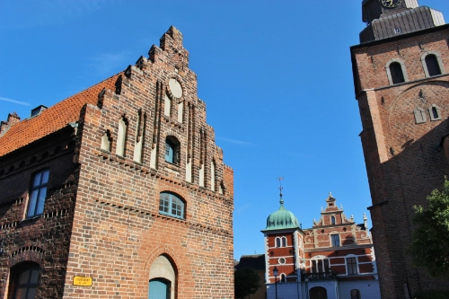
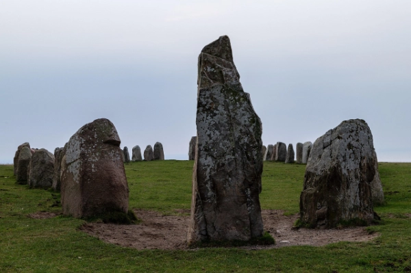
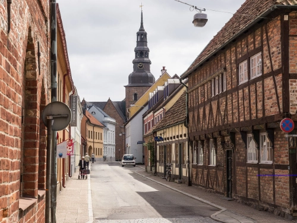

Sankta Maria Kyrka

En av Sveriges mest imponerande kyrkor och hjärtat i Lunds historia. Domkyrkan byggdes redan på 1100-talet och är känd för sitt vackra astronomiska ur och den mystiska kryptan. Här får du höra berättelserna om helgon, kungar och tidens gång – mitt i den storslagna stenkatedralen.
Ales Stenar

Cirka 20 minuter från Ystad ligger detta mystiska fornlämningsområde vid Kåseberga. Ales Stenar består av 59 stora stenblock formade som ett skepp, daterat till vikingatiden. Utsikten över havet är magnifik, särskilt vid solnedgång.
Gamla stan

Promenera genom Ystads charmiga kvarter med korsvirkeshus, kullerstensgator och färgglada fasader. Gamla stan är som en tidsresa – här kan du upptäcka små butiker, blommande innergårdar och stadens genuina atmosfär.